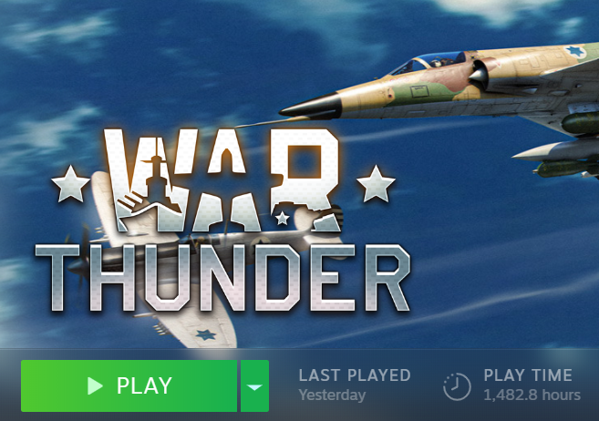

Details
- Name:
Yousef Fares - Student ID:
s3955987 - Student Email:
s3955987@student.rmit.edu.au
A little bit about me
Hey! I'm Australian, however, I come from an Arabic background. Being originally from Jordan and having lived the majority of my life in the middle east, I’ve become accustomed to the way things work there. Family relationships are incredibly important and spending quality time with each other every week is a necessity. As a result of Arabic culture being such a big part of my life (no specific culture as I’ve lived in the UAE and picked up on a range of cultures in some detail), we tend to speak what I like to call Arabglish at home (a weird combination of English and Arabic!). Although, my Arabic isn’t the best and I’m more comfortable with speaking English.
I spent my senior year in Turkey and graduated on June 2021. Academic years’ work a little different over there, our first semester begins in September and ends in June. So, I had this really long break to myself before semester 1 in Australia. It was pretty fun, but it got boring real fast having nothing to do for all that time. Speaking of which, I’m currently a 1st year student at RMIT studying a Bachelor of Information Technology.
Figure 1
Figure 2
Fun Fact
I’m way too addicted to games. Recently managed to buy one of those new Xbox’s and been playing CoD: Cold War*1 a lot more recently. I’ve sunk over 1400 hours into this game called War Thunder*2 and about 800 hours into CSGO*3. Do I have a problem? Probably. Additionally, I love board games and Chess would have to be my favorite. I’m not rated very high on this website I use called Chess.com*4 but I do enjoy watching big brain plays and making some myself.